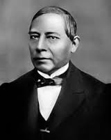
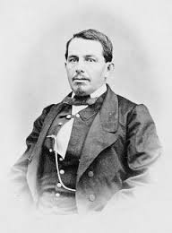
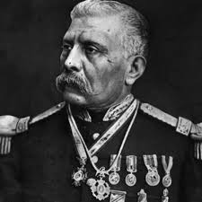
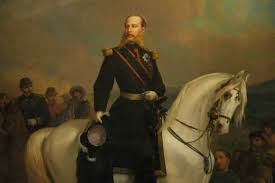

Personajes que participaron

Benito Juárez
Vivió una de las épocas más importantes y difíciles de México, considerada por muchos historiadores como la consolidación de la nación como república. Juárez marcó un parteaguas en la historia nacional, y fue protagonista de primer nivel de esta época. Su biografía durante los años que ocupó la presidencia es una parte sobresaliente de la historia de México.

Ignacio Zaragoza
Al amanecer del 5 de mayo de 1862, el Gral. Ignacio Zaragoza arenga a sus soldados: "Nuestros enemigos son los primeros soldados del mundo, pero vosotros sois los primeros hijos de México y os quieren arrebatar vuestra patria"

Miguel Negrete
Unido al ejército republicano y a las órdenes del general Ignacio Zaragoza, ambos se cubren de gloria en la Batalla de Las Cumbres y en la Batalla de Puebla el 5 de mayo de 1862, llegando a ser considerado como el segundo héroe de dicha batalla al defender el Fuerte de Loreto

Porfirio Díaz
Antes de asumir la presidencia fue un militar destacado, quién brilló por su participación en la Segunda Intervención Francesa en México. Combatió en la Batalla de Puebla, el Sitio de Puebla, la Batalla de Miahuatlán y en la Batalla de la Carbonera. Resaltaron sus acciones militares en el estado de Oaxaca, en donde organizó guerrillas contra los franceses. Porfirio Díaz, el 2 de abril de 1867, tomó Puebla, y el 15 de junio, recuperó para las tropas republicanas la Ciudad de México.
